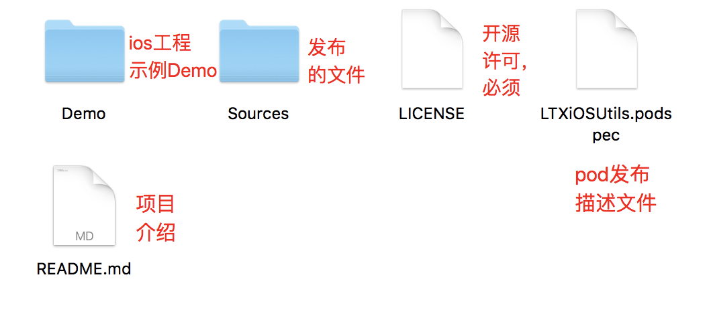

<!DOCTYPE html>
<html lang="zh-CN">
<head>
  <meta charset="UTF-8">
<meta name="viewport" content="width=device-width, initial-scale=1, maximum-scale=2">
<meta name="theme-color" content="#222">
<meta name="generator" content="Hexo 3.9.0">
  <link rel="apple-touch-icon" sizes="180x180" href="/images/apple-touch-icon-next.png">
  <link rel="icon" type="image/png" sizes="32x32" href="/images/favicon-32x32-next.png">
  <link rel="icon" type="image/png" sizes="16x16" href="/images/favicon-16x16-next.png">
  <link rel="mask-icon" href="/images/logo.svg" color="#222">

<link rel="stylesheet" href="/css/main.css">

<link rel="stylesheet" href="//fonts.googleapis.com/css?family=Lato:300,300italic,400,400italic,700,700italic&display=swap&subset=latin,latin-ext">
<link rel="stylesheet" href="/lib/font-awesome/css/all.min.css">

<script id="hexo-configurations">
    var NexT = window.NexT || {};
    var CONFIG = {"hostname":"coder-star.github.io","root":"/","scheme":"Pisces","version":"7.8.0","exturl":false,"sidebar":{"position":"left","display":"post","padding":18,"offset":12,"onmobile":false},"copycode":{"enable":true,"show_result":true,"style":"mac"},"back2top":{"enable":true,"sidebar":false,"scrollpercent":true},"bookmark":{"enable":true,"color":"#222","save":"auto"},"fancybox":false,"mediumzoom":false,"lazyload":false,"pangu":false,"comments":{"style":"tabs","active":null,"storage":true,"lazyload":false,"nav":null},"algolia":{"hits":{"per_page":10},"labels":{"input_placeholder":"Search for Posts","hits_empty":"We didn't find any results for the search: ${query}","hits_stats":"${hits} results found in ${time} ms"}},"localsearch":{"enable":true,"trigger":"auto","top_n_per_article":1,"unescape":false,"preload":false},"motion":{"enable":true,"async":false,"transition":{"post_block":"fadeIn","post_header":"slideDownIn","post_body":"slideDownIn","coll_header":"slideLeftIn","sidebar":"slideUpIn"}},"path":"search.json"};
  </script>

  <meta name="description" content="准备自己的 Pod 库布一个共享库一般包含三部分  库源码及资源文件 你想要发布出去的相关资源文件 LICENSE 文件 默认一般选择 MIT podspec 文件 本库的各项信息描述, 需要提交给 CocoaPods, pod 通过这个文件查找到你共享的库  目录如下 生成这样的目录结构可以利用 CocoaPods 的命令自动生成">
<meta name="keywords" content="iOS,CocoaPods">
<meta property="og:type" content="article">
<meta property="og:title" content="CocoaPods-封装自己的Pod库">
<meta property="og:url" content="https://coder-star.github.io/iOS/架构设计/CocoaPods/CocoaPods-封装自己的Pod库/index.html">
<meta property="og:site_name" content="CoderStar&#39;s Blog">
<meta property="og:description" content="准备自己的 Pod 库布一个共享库一般包含三部分  库源码及资源文件 你想要发布出去的相关资源文件 LICENSE 文件 默认一般选择 MIT podspec 文件 本库的各项信息描述, 需要提交给 CocoaPods, pod 通过这个文件查找到你共享的库  目录如下 生成这样的目录结构可以利用 CocoaPods 的命令自动生成">
<meta property="og:locale" content="zh-CN">
<meta property="og:image" content="https://coder-star.github.io/img/iOS/架构设计/工程目录.png">
<meta property="og:updated_time" content="2021-07-16T12:49:41.480Z">
<meta name="twitter:card" content="summary">
<meta name="twitter:title" content="CocoaPods-封装自己的Pod库">
<meta name="twitter:description" content="准备自己的 Pod 库布一个共享库一般包含三部分  库源码及资源文件 你想要发布出去的相关资源文件 LICENSE 文件 默认一般选择 MIT podspec 文件 本库的各项信息描述, 需要提交给 CocoaPods, pod 通过这个文件查找到你共享的库  目录如下 生成这样的目录结构可以利用 CocoaPods 的命令自动生成">
<meta name="twitter:image" content="https://coder-star.github.io/img/iOS/架构设计/工程目录.png">

<link rel="canonical" href="https://coder-star.github.io/iOS/架构设计/CocoaPods/CocoaPods-封装自己的Pod库/">


<script id="page-configurations">
  // https://hexo.io/docs/variables.html
  CONFIG.page = {
    sidebar: "",
    isHome : false,
    isPost : true,
    lang   : 'zh-CN'
  };
</script>

  <title>CocoaPods-封装自己的Pod库 | CoderStar's Blog</title>
  


  <noscript>
  <style>
  .use-motion .brand,
  .use-motion .menu-item,
  .sidebar-inner,
  .use-motion .post-block,
  .use-motion .pagination,
  .use-motion .comments,
  .use-motion .post-header,
  .use-motion .post-body,
  .use-motion .collection-header { opacity: initial; }

  .use-motion .site-title,
  .use-motion .site-subtitle {
    opacity: initial;
    top: initial;
  }

  .use-motion .logo-line-before i { left: initial; }
  .use-motion .logo-line-after i { right: initial; }
  </style>
</noscript>

<link rel="alternate" href="/atom.xml" title="CoderStar's Blog" type="application/atom+xml">
</head>

<body itemscope itemtype="http://schema.org/WebPage">
  <div class="container use-motion">
    <div class="headband"></div>

    <header class="header" itemscope itemtype="http://schema.org/WPHeader">
      <div class="header-inner"><div class="site-brand-container">
  <div class="site-nav-toggle">
    <div class="toggle" aria-label="切换导航栏">
      <span class="toggle-line toggle-line-first"></span>
      <span class="toggle-line toggle-line-middle"></span>
      <span class="toggle-line toggle-line-last"></span>
    </div>
  </div>

  <div class="site-meta">

    <a href="/" class="brand" rel="start">
      <span class="logo-line-before"><i></i></span>
      <h1 class="site-title">CoderStar's Blog</h1>
      <span class="logo-line-after"><i></i></span>
    </a>
      <p class="site-subtitle" itemprop="description">坚持更文</p>
  </div>

  <div class="site-nav-right">
    <div class="toggle popup-trigger">
        <i class="fa fa-search fa-fw fa-lg"></i>
    </div>
  </div>
</div>


<nav class="site-nav">
  <ul id="menu" class="main-menu menu">
        <li class="menu-item menu-item-home">

    <a href="/" rel="section"><i class="fa fa-home fa-fw"></i>首页</a>

  </li>
        <li class="menu-item menu-item-about">

    <a href="/about/" rel="section"><i class="fa fa-user fa-fw"></i>关于</a>

  </li>
        <li class="menu-item menu-item-tags">

    <a href="/tags/" rel="section"><i class="fa fa-tags fa-fw"></i>标签</a>

  </li>
        <li class="menu-item menu-item-categories">

    <a href="/categories/" rel="section"><i class="fa fa-th fa-fw"></i>分类</a>

  </li>
        <li class="menu-item menu-item-archives">

    <a href="/archives/" rel="section"><i class="fa fa-archive fa-fw"></i>归档</a>

  </li>
      <li class="menu-item menu-item-search">
        <a role="button" class="popup-trigger"><i class="fa fa-search fa-fw"></i>搜索
        </a>
      </li>
  </ul>
</nav>


  <div class="search-pop-overlay">
    <div class="popup search-popup">
        <div class="search-header">
  <span class="search-icon">
    <i class="fa fa-search"></i>
  </span>
  <div class="search-input-container">
    <input autocomplete="off" autocapitalize="off"
           placeholder="搜索..." spellcheck="false"
           type="search" class="search-input">
  </div>
  <span class="popup-btn-close">
    <i class="fa fa-times-circle"></i>
  </span>
</div>
<div id="search-result">
  <div id="no-result">
    <i class="fa fa-spinner fa-pulse fa-5x fa-fw"></i>
  </div>
</div>

    </div>
  </div>

</div>
    </header>

    
  <div class="back-to-top">
    <i class="fa fa-arrow-up"></i>
    <span>0%</span>
  </div>
  <a role="button" class="book-mark-link book-mark-link-fixed"></a>


    <main class="main">
      <div class="main-inner">
        <div class="content-wrap">
          

          <div class="content post posts-expand">
            

    
  
  
  <article itemscope itemtype="http://schema.org/Article" class="post-block" lang="zh-CN">
    <link itemprop="mainEntityOfPage" href="https://coder-star.github.io/iOS/架构设计/CocoaPods/CocoaPods-封装自己的Pod库/">

    <span hidden itemprop="author" itemscope itemtype="http://schema.org/Person">
      <meta itemprop="image" content="/images/avatar.jpeg">
      <meta itemprop="name" content="CoderStar">
      <meta itemprop="description" content="Think more, Code less">
    </span>

    <span hidden itemprop="publisher" itemscope itemtype="http://schema.org/Organization">
      <meta itemprop="name" content="CoderStar's Blog">
    </span>
      <header class="post-header">
        <h1 class="post-title" itemprop="name headline">
          CocoaPods-封装自己的Pod库
        </h1>

        <div class="post-meta">
            <span class="post-meta-item">
              <span class="post-meta-item-icon">
                <i class="far fa-calendar"></i>
              </span>
              <span class="post-meta-item-text">发表于</span>

              <time title="创建时间：2021-03-22 08:47:37" itemprop="dateCreated datePublished" datetime="2021-03-22T08:47:37+08:00">2021-03-22</time>
            </span>
              <span class="post-meta-item">
                <span class="post-meta-item-icon">
                  <i class="far fa-calendar-check"></i>
                </span>
                <span class="post-meta-item-text">更新于</span>
                <time title="修改时间：2021-07-16 20:49:41" itemprop="dateModified" datetime="2021-07-16T20:49:41+08:00">2021-07-16</time>
              </span>
            <span class="post-meta-item">
              <span class="post-meta-item-icon">
                <i class="far fa-folder"></i>
              </span>
              <span class="post-meta-item-text">分类于</span>
                <span itemprop="about" itemscope itemtype="http://schema.org/Thing">
                  <a href="/categories/iOS/" itemprop="url" rel="index"><span itemprop="name">iOS</span></a>
                </span>
                  ，
                <span itemprop="about" itemscope itemtype="http://schema.org/Thing">
                  <a href="/categories/iOS/CocoaPods/" itemprop="url" rel="index"><span itemprop="name">CocoaPods</span></a>
                </span>
            </span>

          
            <span class="post-meta-item" title="阅读次数" id="busuanzi_container_page_pv" style="display: none;">
              <span class="post-meta-item-icon">
                <i class="fa fa-eye"></i>
              </span>
              <span class="post-meta-item-text">阅读次数：</span>
              <span id="busuanzi_value_page_pv"></span>
            </span><br>
            <span class="post-meta-item" title="本文字数">
              <span class="post-meta-item-icon">
                <i class="far fa-file-word"></i>
              </span>
                <span class="post-meta-item-text">本文字数：</span>
              <span>4.6k</span>
            </span>
            <span class="post-meta-item" title="阅读时长">
              <span class="post-meta-item-icon">
                <i class="far fa-clock"></i>
              </span>
                <span class="post-meta-item-text">阅读时长 &asymp;</span>
              <span>4 分钟</span>
            </span>

        </div>
      </header>

    
    
    
    <div class="post-body" itemprop="articleBody">

      
        <h2 id="准备自己的-Pod-库"><a href="#准备自己的-Pod-库" class="headerlink" title="准备自己的 Pod 库"></a>准备自己的 Pod 库</h2><p>布一个共享库一般包含三部分</p>
<ul>
<li><strong>库源码及资源文件</strong> 你想要发布出去的相关资源文件</li>
<li><strong>LICENSE 文件</strong> 默认一般选择 MIT</li>
<li><strong>podspec 文件</strong> 本库的各项信息描述, 需要提交给 CocoaPods, pod 通过这个文件查找到你共享的库</li>
</ul>
<p>目录如下<br></p>
<p>生成这样的目录结构可以利用 CocoaPods 的命令自动生成</p>
<figure class="highlight plain"><table><tr><td class="gutter"><pre><span class="line">1</span><br><span class="line">2</span><br><span class="line">3</span><br><span class="line">4</span><br><span class="line">5</span><br></pre></td><td class="code"><pre><span class="line">- **pod lib create XXX**</span><br><span class="line">  创建 pod 库的基本结构，在创建过程中会给出选项让你做选择，包括是否需要 Example 工程等等</span><br><span class="line"></span><br><span class="line">- **pod spec create XXX**</span><br><span class="line">  创建库的描述文件，XXX 为依赖库的名字，使用这种方式创建不要添加.podspec 扩展名，这种方式只会创建描述文件</span><br></pre></td></tr></table></figure>
<p><strong>podspec 文件格式</strong></p>
<p>全部配置请见 <a href="https://guides.cocoapods.org/syntax/podspec.html#specification" target="_blank" rel="noopener">官方文档</a></p>
<figure class="highlight ruby"><table><tr><td class="gutter"><pre><span class="line">1</span><br><span class="line">2</span><br><span class="line">3</span><br><span class="line">4</span><br><span class="line">5</span><br><span class="line">6</span><br><span class="line">7</span><br><span class="line">8</span><br><span class="line">9</span><br><span class="line">10</span><br><span class="line">11</span><br><span class="line">12</span><br><span class="line">13</span><br><span class="line">14</span><br><span class="line">15</span><br><span class="line">16</span><br><span class="line">17</span><br><span class="line">18</span><br><span class="line">19</span><br><span class="line">20</span><br><span class="line">21</span><br><span class="line">22</span><br><span class="line">23</span><br><span class="line">24</span><br><span class="line">25</span><br><span class="line">26</span><br><span class="line">27</span><br><span class="line">28</span><br><span class="line">29</span><br><span class="line">30</span><br><span class="line">31</span><br><span class="line">32</span><br><span class="line">33</span><br><span class="line">34</span><br><span class="line">35</span><br><span class="line">36</span><br><span class="line">37</span><br><span class="line">38</span><br><span class="line">39</span><br><span class="line">40</span><br><span class="line">41</span><br><span class="line">42</span><br><span class="line">43</span><br><span class="line">44</span><br><span class="line">45</span><br><span class="line">46</span><br><span class="line">47</span><br><span class="line">48</span><br><span class="line">49</span><br><span class="line">50</span><br><span class="line">51</span><br><span class="line">52</span><br><span class="line">53</span><br><span class="line">54</span><br><span class="line">55</span><br><span class="line">56</span><br><span class="line">57</span><br><span class="line">58</span><br><span class="line">59</span><br><span class="line">60</span><br><span class="line">61</span><br><span class="line">62</span><br><span class="line">63</span><br><span class="line">64</span><br></pre></td><td class="code"><pre><span class="line">Pod::Spec.new <span class="keyword">do</span> <span class="params">|s|</span></span><br><span class="line">  s.name         = <span class="string">"LTXiOSUtils"</span>        <span class="comment">#名称</span></span><br><span class="line">  s.version      = <span class="string">"0.0.1"</span>              <span class="comment">#版本号</span></span><br><span class="line">  s.summary      = <span class="string">"Just testing"</span>       <span class="comment">#简短介绍</span></span><br><span class="line">  s.homepage     = <span class="string">"http://aoto.io/"</span>     <span class="comment">#主页地址，可以是github主页</span></span><br><span class="line">  <span class="comment"># s.screenshots  = "www.example.com/screenshots_1.gif" //快照</span></span><br><span class="line">  s.license      = &#123; <span class="symbol">:type</span> =&gt; <span class="string">"MIT"</span>, <span class="symbol">:file</span> =&gt; <span class="string">"LICENSE"</span> &#125; <span class="comment">#开源协议</span></span><br><span class="line">  s.author       = &#123; <span class="string">"linyi31"</span> =&gt; <span class="string">"linyi@jd.com"</span> &#125;</span><br><span class="line">  s.source       = &#123; <span class="symbol">:git</span> =&gt; <span class="string">"https://github.com/Coder-Star/LTXiOSUtils.git"</span>, <span class="symbol">:tag</span> =&gt; s.version &#125; <span class="comment">#共享库源代码地址</span></span><br><span class="line">  <span class="comment"># s.source     = &#123; :git =&gt; 'local', :tag =&gt; s.version&#125; #当在开发阶段，使用本地代码时，可以使用这种写法，实际上参数不重要，只有给予s.source 参数就行，后面的是为了避免警告</span></span><br><span class="line">  s.platform     = <span class="symbol">:ios</span>, <span class="string">"9.0"</span> <span class="comment"># 支持的平台及最低版本</span></span><br><span class="line">  <span class="comment"># s.ios.deployment_target = '7.0' # 或者这种写法，这种写法可以设置多平台</span></span><br><span class="line">  s.requires_arc  = <span class="literal">true</span> <span class="comment"># arc和mrc选项，true一定不要加单引号</span></span><br><span class="line">  s.swift_version = <span class="string">"4.2"</span>  <span class="comment">#设置swift版本</span></span><br><span class="line">  s.static_framework  =  <span class="literal">true</span> <span class="comment"># 设置库为静态库，mach-o type会是static，设置之后即使项目的 Podfile 中使用了 use_frameworks! ，使用 该pod 也会以静态库使用</span></span><br><span class="line"></span><br><span class="line">  s.source_files = <span class="string">"LTXiOSUtils/Classes/**/*.swift"</span>   <span class="comment">#OC可以使用类似这样"Source/Classes/**/*.&#123;h,m&#125;",**/*是一个正则，表示下面所有swift文件，这个路径是相对于podspec文件而言</span></span><br><span class="line">  <span class="comment"># s.exclude_files = "LTXiOSUtils/Classes/Exclude" #忽略提交的文件</span></span><br><span class="line"></span><br><span class="line"></span><br><span class="line">  s.dependency <span class="string">"Alamofire"</span>, <span class="string">"~&gt; 4.7"</span>    <span class="comment">#依赖关系，该项目所依赖的其他库，如果有多个可以写多个 s.dependency</span></span><br><span class="line">  s.dependency <span class="string">'SwiftyJSON'</span>, <span class="string">'~&gt; 4.0'</span></span><br><span class="line"></span><br><span class="line"></span><br><span class="line">  <span class="comment"># resources及resource_bundle都是设置资源的方式</span></span><br><span class="line"></span><br><span class="line">  s.resources     = <span class="string">'LTXiOSUtils/Resource/*.png'</span>  <span class="comment">#资源文件路径</span></span><br><span class="line">  <span class="comment"># cocoapods 官方推荐使用 resource_bundles，因为 resources  指定的资源会被直接拷贝到目标应用中，因此不会被 Xcode 优化，在编译生成 product 时，与目标应用的图片资源以及其他同样使用 resources 的 Pod 的图片一起打包为一个 Assets.car 文件。这样全部混杂在一起，就使得资源文件容易产生命名冲突。而 resource_bundles 指定的资源，会被编译到独立的 bundle 中，bundle 名就是你的 pod 名，这样就很大程度上减小了资源名冲突问题，并且 Xcode 会对 bundle 进行优化。一个 bundle 包含一个 Assets.car，获取图片的时候要严格指定 bundle 的位置，很好的隔离了各个库或者一个库下的资源文件。</span></span><br><span class="line">  resources.resource_bundle = &#123; <span class="string">"LTXiOSUtils"</span> =&gt; <span class="string">"LTXiOSUtils/Resources/Resource/*"</span> &#125; <span class="comment"># LTXiOSUtil是bundle的名称。</span></span><br><span class="line"></span><br><span class="line">  s.vendored_libraries = <span class="string">'YJDemoSDK/Classes/libWeChatSDK.a'</span> <span class="comment"># 表示依赖第三方/自己的 .a / 静态库，依赖的第三方的或者自己的静态库文件必须以lib为前缀进行命名，否则会出现找不到的情况，这一点非常重要</span></span><br><span class="line">  s.public_header_files = <span class="string">'YJDemoSDK/Classes/YJDemoSDK.h'</span>   <span class="comment">#需要对外开放的头文件，如果在swift工程中，这个头文件会被放置到umbrella-header中</span></span><br><span class="line">  s.module_map = <span class="string">'source/module.modulemap'</span> <span class="comment"># 自定义modulemap</span></span><br><span class="line"></span><br><span class="line">  s.private_header_files = <span class="string">'xxxx.h'</span> <span class="comment">#私有h文件，该文件放置库中使用的第三方的头文件</span></span><br><span class="line"></span><br><span class="line">  s.vendored_frameworks = <span class="string">"frameworks/Test.framework"</span> <span class="comment"># 第三方framework目录，当库不想公布源码时可以使用这种方式</span></span><br><span class="line">  s.frameworks = <span class="string">"UIKit"</span>,<span class="string">"Foundation"</span> <span class="comment">#需要引入的系统frameworks</span></span><br><span class="line">  s.libraries  = <span class="string">'z'</span>, <span class="string">'sqlite3'</span> <span class="comment">#表示依赖的系统类库，比如libz.dylib等</span></span><br><span class="line"></span><br><span class="line"><span class="comment"># 模块化，假如项目中有OC代码，需要模块化，就需要进行开启，并且配合public_header_files使用</span></span><br><span class="line"><span class="comment">#  s.pod_target_xcconfig = &#123;</span></span><br><span class="line"><span class="comment">#    'DEFINES_MODULE' =&gt; 'YES'</span></span><br><span class="line"><span class="comment">#  &#125;</span></span><br><span class="line"></span><br><span class="line">  s.default_subspec = <span class="string">"Utils"</span></span><br><span class="line"></span><br><span class="line">  <span class="comment">#文件分层，如果Classes下面只有子目录，没有文件，则上述的s.source_files可以不用写</span></span><br><span class="line">  s.subspec <span class="string">'Utils'</span> <span class="keyword">do</span> <span class="params">|ss1|</span></span><br><span class="line">      ss1.source_files = <span class="string">'LTXiOSUtils/Classes/Utils/*.swift'</span></span><br><span class="line">  <span class="keyword">end</span></span><br><span class="line"></span><br><span class="line">  s.subspec <span class="string">'View'</span> <span class="keyword">do</span> <span class="params">|ss2|</span></span><br><span class="line">      ss2.dependency <span class="string">'LTXiOSUtils/Utils'</span></span><br><span class="line">      ss2.source_files = <span class="string">'LTXiOSUtils/Classes/View/*.swift'</span></span><br><span class="line">      ss2.subspec <span class="string">'Button'</span> <span class="keyword">do</span> <span class="params">|sss1|</span></span><br><span class="line">        sss1.source_files = <span class="string">'LTXiOSUtils/Classes/View/Button/*.swift'</span></span><br><span class="line">      <span class="keyword">end</span></span><br><span class="line">      ss2.subspec <span class="string">'TextView'</span> <span class="keyword">do</span> <span class="params">|sss2|</span></span><br><span class="line">        sss2.source_files = <span class="string">'LTXiOSUtils/Classes/View/TextView/*.swift'</span></span><br><span class="line">      <span class="keyword">end</span></span><br><span class="line">  <span class="keyword">end</span></span><br><span class="line"></span><br><span class="line"><span class="keyword">end</span></span><br></pre></td></tr></table></figure>
<p><strong>小 Tips</strong></p>
<ul>
<li>代码开发过程中，需要注意将暴露出的方法以及类的访问显示符调整为 open 或者是 public，使代码可以被外部正常访问到</li>
<li>本地库调试时，Demo 工程 Podfile 文件引用本地库的方式使用<code>pod &#39;LTXiOSUtils&#39;,:path =&gt; &#39;../&#39;</code>这种形式，如果调试过程中出现修改不生效的问题，请及时 clean。</li>
</ul>
<h2 id="发布-Pod-库"><a href="#发布-Pod-库" class="headerlink" title="发布 Pod 库"></a>发布 Pod 库</h2><h3 id="正式发布前准备"><a href="#正式发布前准备" class="headerlink" title="正式发布前准备"></a>正式发布前准备</h3><p>podspec 文件关联的源代码地址是以 tag 为准，所以发布 pod 库之前还要保证远程仓库中已经存在本地发布依赖的 tag，tag 设置相关命令如下：</p>
<figure class="highlight plain"><table><tr><td class="gutter"><pre><span class="line">1</span><br><span class="line">2</span><br><span class="line">3</span><br><span class="line">4</span><br></pre></td><td class="code"><pre><span class="line">git tag -m &apos;描述&apos; &apos;1.0.0&apos;</span><br><span class="line"></span><br><span class="line">// 推送所有tag，也可以使用  git push origin &apos;1.0.0&apos; 推送指定tag到远程</span><br><span class="line">git push --tags</span><br></pre></td></tr></table></figure>
<p>库发布之前需要使用命令验证库的格式及代码是否有问题，命令如下：</p>
<figure class="highlight plain"><table><tr><td class="gutter"><pre><span class="line">1</span><br><span class="line">2</span><br><span class="line">3</span><br><span class="line">4</span><br><span class="line">5</span><br><span class="line">6</span><br></pre></td><td class="code"><pre><span class="line">// 验证 本地podspec，验证过程中可能会出现警告造成验证不成功（The spec did not pass validation）,可以使用pod lib lint --allow-warnings忽略警告完成验证</span><br><span class="line">// 也可以添加 `--skip-import-validation` 忽略导入验证</span><br><span class="line">pod lib lint</span><br><span class="line"></span><br><span class="line">// 验证本地podspec及远程podspec文件</span><br><span class="line">pod spec lint</span><br></pre></td></tr></table></figure>
<p>在发布 Pod 之前需要先进行注册 CocoaPods 账号，注册命令如下：</p>
<figure class="highlight plain"><table><tr><td class="gutter"><pre><span class="line">1</span><br><span class="line">2</span><br></pre></td><td class="code"><pre><span class="line">// pod 注册,包括邮箱以及用户名，会让邮箱发送一个链接，点击链接完成注册</span><br><span class="line">pod trunk register xxxx@qq.com &apos;name&apos;</span><br></pre></td></tr></table></figure>
<h3 id="发布"><a href="#发布" class="headerlink" title="发布"></a>发布</h3><p>发布 Pod 库有两种方式，一种方式是发布到 CocoaPods 的中心仓库，这样是开源出去的，另外一种是发布到私有索引库，用于不开源，公司内部使用。</p>
<h4 id="公有索引库"><a href="#公有索引库" class="headerlink" title="公有索引库"></a>公有索引库</h4><figure class="highlight plain"><table><tr><td class="gutter"><pre><span class="line">1</span><br><span class="line">2</span><br><span class="line">3</span><br><span class="line">4</span><br><span class="line">5</span><br><span class="line">6</span><br><span class="line">7</span><br><span class="line">8</span><br></pre></td><td class="code"><pre><span class="line">// 发布到公有库</span><br><span class="line">pod trunk push XXX.podspec</span><br><span class="line"></span><br><span class="line">// 删除pod库的的某一个版本</span><br><span class="line">pod trunk delete XXX 版本号</span><br><span class="line"></span><br><span class="line">// 放弃整个 pod 库(会弹出确认框提示确认)</span><br><span class="line">pod trunk deprecate XXX</span><br></pre></td></tr></table></figure>
<h4 id="私有索引库"><a href="#私有索引库" class="headerlink" title="私有索引库"></a>私有索引库</h4><figure class="highlight plain"><table><tr><td class="gutter"><pre><span class="line">1</span><br><span class="line">2</span><br><span class="line">3</span><br><span class="line">4</span><br><span class="line">5</span><br><span class="line">6</span><br><span class="line">7</span><br><span class="line">8</span><br><span class="line">9</span><br></pre></td><td class="code"><pre><span class="line">// 添加私有索引库地址到本地 repo，地址可以是 gitee、gitlab、github 等 git 地址</span><br><span class="line">pod repo add 私有库名称 私有库地址</span><br><span class="line"></span><br><span class="line">// 删除某一个私有 Spec Repo</span><br><span class="line">pod repo remove xxxx</span><br><span class="line"></span><br><span class="line">// 将描述文件上传到私有索引库，这时私有索引库中就会多出提交的podspec文件</span><br><span class="line">// 其实就是将库发布到私有源</span><br><span class="line">pod repo push 私有索引库名称 xxxx.podspec</span><br></pre></td></tr></table></figure>
<p>外部使用私有索引库里面的 pod 库时需要在 Podfile 文件中加上私有源，最好放在其他源的前面</p>
<figure class="highlight plain"><table><tr><td class="gutter"><pre><span class="line">1</span><br></pre></td><td class="code"><pre><span class="line">source &apos;https://github.com/Coder-Star/LTXSpecs.git&apos;</span><br></pre></td></tr></table></figure>
<p>将共享库上传到仓库地址后，一般使用<code>pod setup</code>以及<code>pod search</code> 查看自己的库，如果遇到上传很长时间还是无法查询到自己库的时候，可以先将<code>pod setup</code>成功后生成的~/Library/Caches/CocoaPods/search_index（<code>rm ~/Library/Caches/CocoaPods/search_index.json</code>），json 文件删除后再进行<code>pod search</code>。</p>
<p>如果还不成功，还可以使用<code>pod search xxx --simple</code>进行搜索。</p>
<h2 id="其他"><a href="#其他" class="headerlink" title="其他"></a>其他</h2><figure class="highlight plain"><table><tr><td class="gutter"><pre><span class="line">1</span><br><span class="line">2</span><br></pre></td><td class="code"><pre><span class="line">// 查看自己的 pod 相关信息，包括发布过的库</span><br><span class="line">pod trunk me</span><br></pre></td></tr></table></figure>

    </div>

    
    
    
        <div class="reward-container">
  <div></div>
  <button onclick="var qr = document.getElementById('qr'); qr.style.display = (qr.style.display === 'none') ? 'block' : 'none';">
    打赏
  </button>
  <div id="qr" style="display: none;">
      
      <div style="display: inline-block;">
        
        <p>微信支付</p>
      </div>
      
      <div style="display: inline-block;">
        
        <p>支付宝</p>
      </div>

  </div>
</div>

        

  <div class="followme">
    <p>欢迎关注我的其它发布渠道</p>

    <div class="social-list">

        <div class="social-item">
          <a target="_blank" class="social-link" href="/images/WeChatOfficialAccountLogoBeautify.png">
            <span class="icon">
              <i class="fab fa-weixin"></i>
            </span>

            <span class="label">WeChat</span>
          </a>
        </div>

        <div class="social-item">
          <a target="_blank" class="social-link" href="/atom.xml">
            <span class="icon">
              <i class="fa fa-rss"></i>
            </span>

            <span class="label">RSS</span>
          </a>
        </div>
    </div>
  </div>


      <footer class="post-footer">
          
          <div class="post-tags">
              <a href="/tags/iOS/" rel="tag"><i class="fa fa-tag"></i> iOS</a>
              <a href="/tags/CocoaPods/" rel="tag"><i class="fa fa-tag"></i> CocoaPods</a>
          </div>

        


        
    <div class="post-nav">
      <div class="post-nav-item">
    <a href="/iOS/架构设计/CocoaPods/CocoaPods-总览/" rel="prev" title="CocoaPods-总览">
      <i class="fa fa-chevron-left"></i> CocoaPods-总览
    </a></div>
      <div class="post-nav-item">
    <a href="/iOS/架构设计/CocoaPods/CocoaPods-项目使用/" rel="next" title="CocoaPods-项目使用">
      CocoaPods-项目使用 <i class="fa fa-chevron-right"></i>
    </a></div>
    </div>
      </footer>
    
  </article>
  
  
  


          </div>
          
    <div class="comments" id="gitalk-container"></div>

<script>
  window.addEventListener('tabs:register', () => {
    let { activeClass } = CONFIG.comments;
    if (CONFIG.comments.storage) {
      activeClass = localStorage.getItem('comments_active') || activeClass;
    }
    if (activeClass) {
      let activeTab = document.querySelector(`a[href="#comment-${activeClass}"]`);
      if (activeTab) {
        activeTab.click();
      }
    }
  });
  if (CONFIG.comments.storage) {
    window.addEventListener('tabs:click', event => {
      if (!event.target.matches('.tabs-comment .tab-content .tab-pane')) return;
      let commentClass = event.target.classList[1];
      localStorage.setItem('comments_active', commentClass);
    });
  }
</script>

        </div>
          
  
  <div class="toggle sidebar-toggle">
    <span class="toggle-line toggle-line-first"></span>
    <span class="toggle-line toggle-line-middle"></span>
    <span class="toggle-line toggle-line-last"></span>
  </div>

  <aside class="sidebar">
    <div class="sidebar-inner">

      <ul class="sidebar-nav motion-element">
        <li class="sidebar-nav-toc">
          文章目录
        </li>
        <li class="sidebar-nav-overview">
          站点概览
        </li>
      </ul>

      <!--noindex-->
      <div class="post-toc-wrap sidebar-panel">
          <div class="post-toc motion-element"><ol class="nav"><li class="nav-item nav-level-2"><a class="nav-link" href="#准备自己的-Pod-库"><span class="nav-number">1.</span> <span class="nav-text">准备自己的 Pod 库</span></a></li><li class="nav-item nav-level-2"><a class="nav-link" href="#发布-Pod-库"><span class="nav-number">2.</span> <span class="nav-text">发布 Pod 库</span></a><ol class="nav-child"><li class="nav-item nav-level-3"><a class="nav-link" href="#正式发布前准备"><span class="nav-number">2.1.</span> <span class="nav-text">正式发布前准备</span></a></li><li class="nav-item nav-level-3"><a class="nav-link" href="#发布"><span class="nav-number">2.2.</span> <span class="nav-text">发布</span></a><ol class="nav-child"><li class="nav-item nav-level-4"><a class="nav-link" href="#公有索引库"><span class="nav-number">2.2.1.</span> <span class="nav-text">公有索引库</span></a></li><li class="nav-item nav-level-4"><a class="nav-link" href="#私有索引库"><span class="nav-number">2.2.2.</span> <span class="nav-text">私有索引库</span></a></li></ol></li></ol></li><li class="nav-item nav-level-2"><a class="nav-link" href="#其他"><span class="nav-number">3.</span> <span class="nav-text">其他</span></a></li></ol></div>
      </div>
      <!--/noindex-->

      <div class="site-overview-wrap sidebar-panel">
        <div class="site-author motion-element" itemprop="author" itemscope itemtype="http://schema.org/Person">
    
  <p class="site-author-name" itemprop="name">CoderStar</p>
  <div class="site-description" itemprop="description">Think more, Code less</div>
</div>
<div class="site-state-wrap motion-element">
  <nav class="site-state">
      <div class="site-state-item site-state-posts">
          <a href="/archives/">
        
          <span class="site-state-item-count">113</span>
          <span class="site-state-item-name">日志</span>
        </a>
      </div>
      <div class="site-state-item site-state-categories">
            <a href="/categories/">
          
        <span class="site-state-item-count">32</span>
        <span class="site-state-item-name">分类</span></a>
      </div>
      <div class="site-state-item site-state-tags">
            <a href="/tags/">
          
        <span class="site-state-item-count">86</span>
        <span class="site-state-item-name">标签</span></a>
      </div>
  </nav>
</div>
  <div class="links-of-author motion-element">
      <span class="links-of-author-item">
        <a href="https://juejin.im/user/5d3120ae5188254cbc32a2e1" title="掘金 → https://juejin.im/user/5d3120ae5188254cbc32a2e1" rel="noopener" target="_blank"><i class="fa fa-heartbeat fa-fw"></i>掘金</a>
      </span>
      <span class="links-of-author-item">
        <a href="https://github.com/Coder-Star" title="GitHub → https://github.com/Coder-Star" rel="noopener" target="_blank"><i class="fab fa-github fa-fw"></i>GitHub</a>
      </span>
      <span class="links-of-author-item">
        <a href="mailto:1340529758@qq.com" title="E-Mail → mailto:1340529758@qq.com" rel="noopener" target="_blank"><i class="fa fa-envelope fa-fw"></i>E-Mail</a>
      </span>
      <span class="links-of-author-item">
        <a href="https://weibo.com/u/5328016032" title="Weibo → https://weibo.com/u/5328016032" rel="noopener" target="_blank"><i class="fab fa-weibo fa-fw"></i>Weibo</a>
      </span>
  </div>


<div>
    <image src="/images/WeChatOfficialAccountLogoBeautify.png"/>
</div>
      </div>

    </div>
  </aside>
  <div id="sidebar-dimmer"></div>


      </div>
    </main>

    <footer class="footer">
      <div class="footer-inner">
        

        

<div class="copyright">
  
  &copy; 
  <span itemprop="copyrightYear">2021</span>
  <span class="with-love">
    <i class="user"></i>
  </span>
  <span class="author" itemprop="copyrightHolder">CoderStar</span>
    <span class="post-meta-divider">|</span>
    <span class="post-meta-item-icon">
      <i class="fa fa-chart-area"></i>
    </span>
    <span title="站点总字数">308k</span>
    <span class="post-meta-divider">|</span>
    <span class="post-meta-item-icon">
      <i class="fa fa-coffee"></i>
    </span>
    <span title="站点阅读时长">4:40</span>
</div>

        
<div class="busuanzi-count">
  <script async src="https://busuanzi.ibruce.info/busuanzi/2.3/busuanzi.pure.mini.js"></script>
    <span class="post-meta-item" id="busuanzi_container_site_uv" style="display: none;">
      <span class="post-meta-item-icon">
        <i class="fa fa-user"></i>
      </span>
      <span class="site-uv" title="总访客量">
        <span id="busuanzi_value_site_uv"></span>
      </span>
    </span>
    <span class="post-meta-divider">|</span>
    <span class="post-meta-item" id="busuanzi_container_site_pv" style="display: none;">
      <span class="post-meta-item-icon">
        <i class="fa fa-eye"></i>
      </span>
      <span class="site-pv" title="总访问量">
        <span id="busuanzi_value_site_pv"></span>
      </span>
    </span>
</div>


      </div>
    </footer>
  </div>

  
  <script src="/lib/anime.min.js"></script>
  <script src="/lib/velocity/velocity.min.js"></script>
  <script src="/lib/velocity/velocity.ui.min.js"></script>
<script src="/js/utils.js"></script><script src="/js/motion.js"></script>
<script src="/js/schemes/pisces.js"></script>
<script src="/js/next-boot.js"></script><script src="/js/bookmark.js"></script>


  
  <script>
    (function(){
      var canonicalURL, curProtocol;
      //Get the <link> tag
      var x=document.getElementsByTagName("link");
		//Find the last canonical URL
		if(x.length > 0){
			for (i=0;i<x.length;i++){
				if(x[i].rel.toLowerCase() == 'canonical' && x[i].href){
					canonicalURL=x[i].href;
				}
			}
		}
    //Get protocol
	    if (!canonicalURL){
	    	curProtocol = window.location.protocol.split(':')[0];
	    }
	    else{
	    	curProtocol = canonicalURL.split(':')[0];
	    }
      //Get current URL if the canonical URL does not exist
	    if (!canonicalURL) canonicalURL = window.location.href;
	    //Assign script content. Replace current URL with the canonical URL
      !function(){var e=/([http|https]:\/\/[a-zA-Z0-9\_\.]+\.baidu\.com)/gi,r=canonicalURL,t=document.referrer;if(!e.test(r)){var n=(String(curProtocol).toLowerCase() === 'https')?"https://sp0.baidu.com/9_Q4simg2RQJ8t7jm9iCKT-xh_/s.gif":"//api.share.baidu.com/s.gif";t?(n+="?r="+encodeURIComponent(document.referrer),r&&(n+="&l="+r)):r&&(n+="?l="+r);var i=new Image;i.src=n}}(window);})();
  </script>


  <script src="/js/local-search.js"></script>


  

  

<link rel="stylesheet" href="//cdn.jsdelivr.net/npm/gitalk@1/dist/gitalk.min.css">

<script>
NexT.utils.loadComments(document.querySelector('#gitalk-container'), () => {
  NexT.utils.getScript('//cdn.jsdelivr.net/npm/gitalk@1/dist/gitalk.min.js', () => {
    var gitalk = new Gitalk({
      clientID    : '5f96126d46f87a466491',
      clientSecret: '3504665f1b9832b309d35b684ec4c034ac526d04',
      repo        : 'BlogTalk',
      owner       : 'Coder-Star',
      admin       : ['Coder-Star'],
      id          : '95355be832d98d3c4628470d93b42557',
        language: 'zh-CN',
      distractionFreeMode: true
    });
    gitalk.render('gitalk-container');
  }, window.Gitalk);
});
</script>

</body>
</html>
